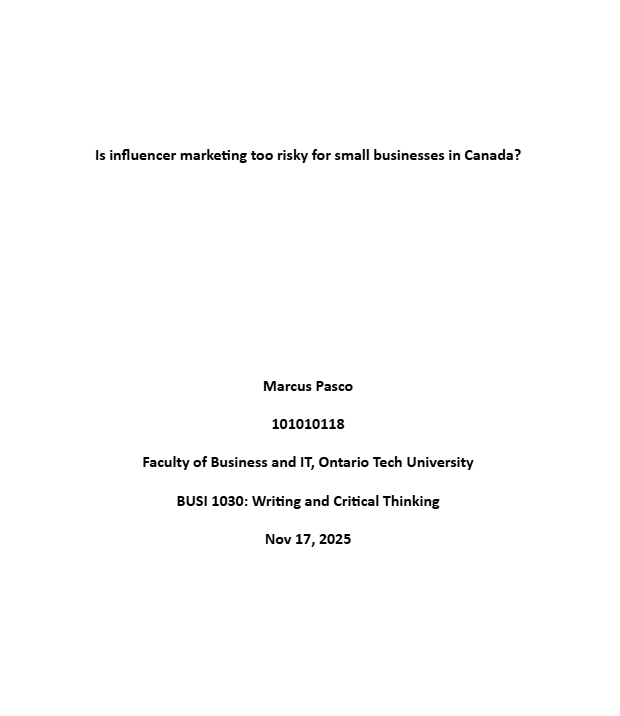
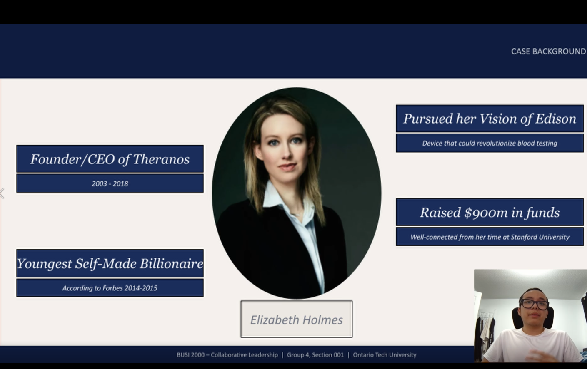

My Projects
These are some of the projects I have done over my academic career

Networking 2 Final Project
Using Packet Tracer we were given a topology and to configure to how the assignment demands. In this case, simulates real-world long distance connections.

Object Oriented Programming Final Project
Using Python, me and my group designed a rudimentary government filing cabinet application that is similar to real ones. It includes adding people based on citizenship and other personal information.

Writing and Critical Thinking Essay
An essay talking about influencer marketing in Canada. It includes evidence based on academic research from our database.

Collaborative Leadership Group Video
Using editing software, me and my group filmed a video regarding terrible leadership practices. In this case, it was on Elizabeth Holmes, former CEO of Theranos